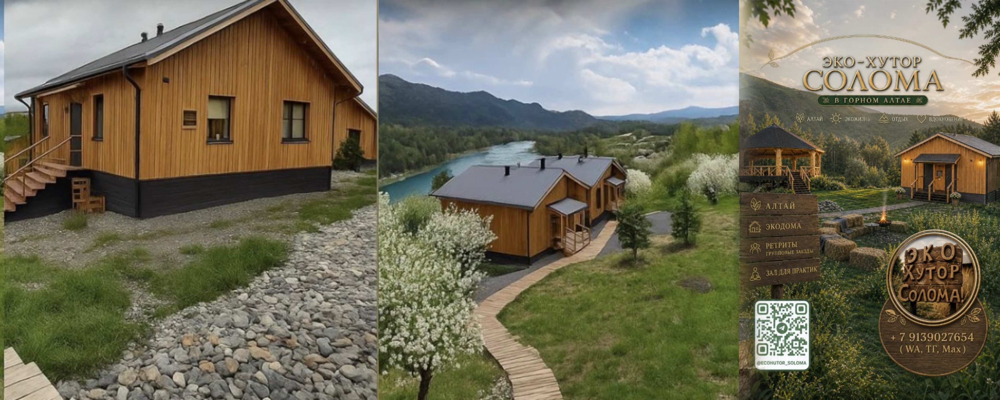
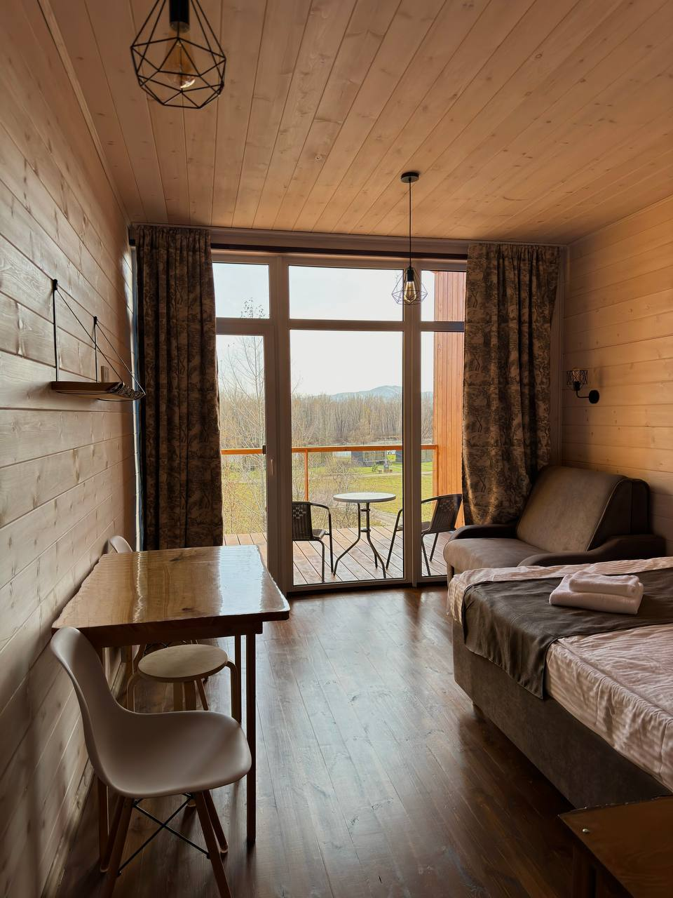
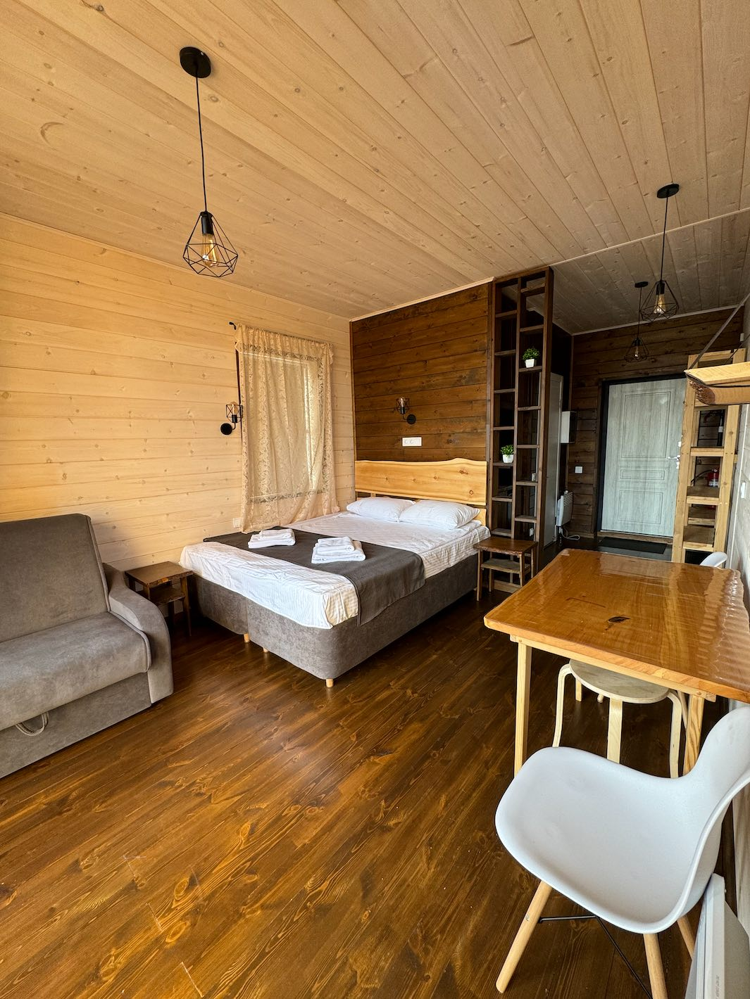
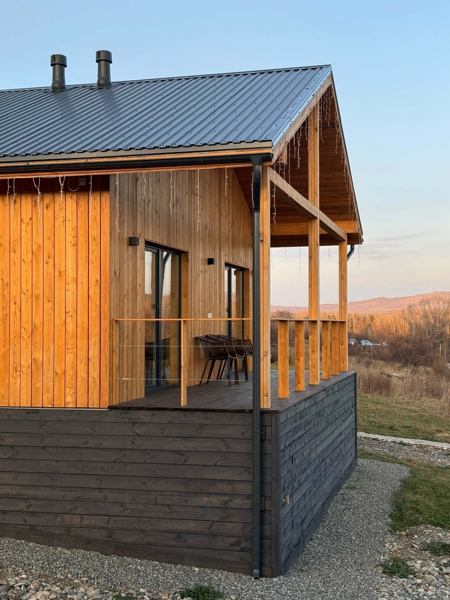
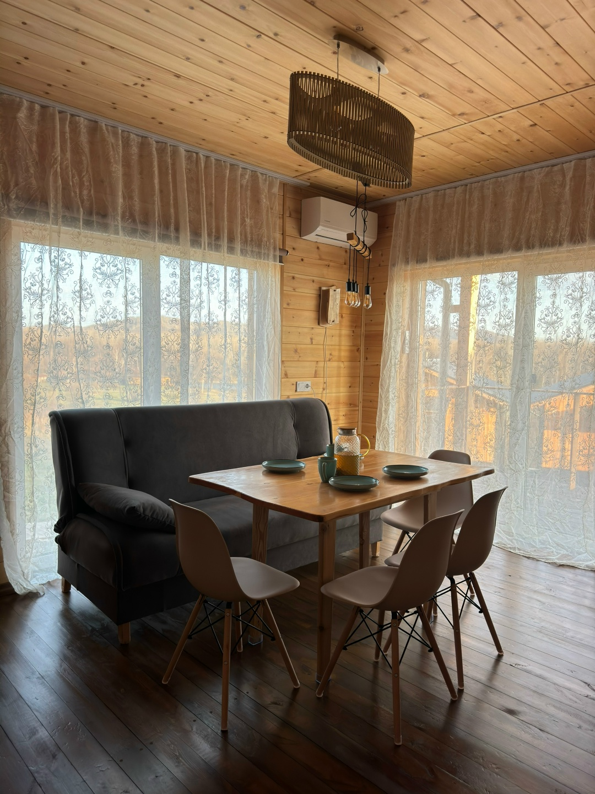
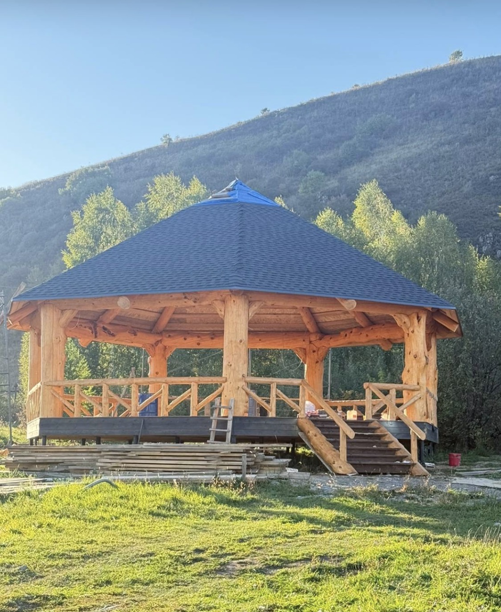
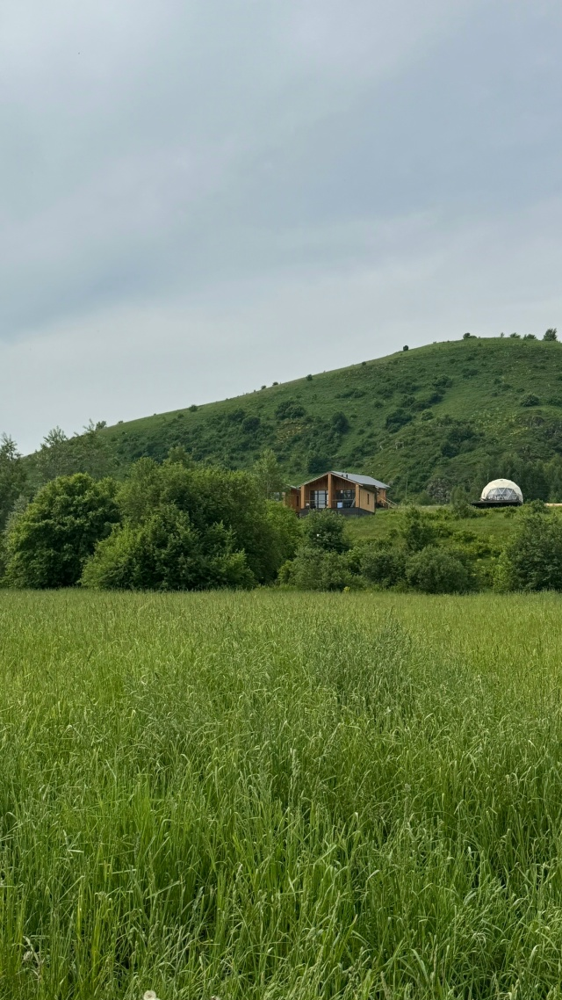

Ближе к природе.
Ближе к себе.
Эко-студии, шале и пространство для камерных встреч на берегу Катуни, у подножия горы Бабырган.
Знакомьтесь с хуторомТишина, у которой
есть свой адрес
Эко-Хутор «Солома» расположился на возвышенности комплекса «Терра АлтаЯ», обособленно от его оживлённой части.
Здесь можно провести несколько спокойных дней вдвоём или с семьёй, а можно собрать группу для ретрита, йога-тура или творческой встречи. Рядом — Катунь, предгорья и прогулочные маршруты.
для важных моментов.


и много света
Своя студия.
Своя пауза.
В каждом из четырёх домов — две эко-студии из СЛМ-панелей. Хорошая звукоизоляция и большая лоджия помогают почувствовать приватность.
Для комфортного отдыха
- Двуспальная кровать и раскладной диван
- Отдельная душевая и туалетная комната
- Холодильник, чайник, микроволновая печь и посуда
- Wi-Fi и панорамные окна
Больше места
для своих
Для семейной поездки или компании на хуторе есть два шале с кухней-гостиной, деревянной отделкой и видами на природу.
Одна спальня и просторная кухня-гостиная.
Две спальни и кухня-гостиная.


Собраться
и замедлиться
Хутор подходит для камерных групп примерно на 15–30 человек: ретритов, йога-туров, чайных церемоний и творческих встреч.
Для практик есть купол площадью 158 м² и открытая деревянная площадка. У Катуни — чайный домик и место для прогулок у воды.


Каждому дню —
свой ритм
Пауза для тела
На территории «Терра АлтаЯ» работают SPA-комплекс и русская баня. После прогулки можно устроить себе день отдыха.
Прогулки и встречи
Катунь, предгорья, чайный домик и природные маршруты помогают провести время вместе без спешки.
Алтай в движении
Горнолыжный комплекс «Манжерок» — примерно в 40 минутах езды. Зимой в окрестностях доступны лыжи и коньки.
Несколько мгновений
на хуторе
Короткий фотофильм из снимков хутора, шале и эко-студий.
До встречи
на Алтае
Эко-Хутор Солома находится на территории комплекса «Терра АлтаЯ», у автодороги Подгорное — Ая. От аэропорта Горно-Алтайска — примерно 30 минут на машине.
5 км автодороги Подгорное — АяАйский сельсовет, Алтайский крайНовости и связь в VK